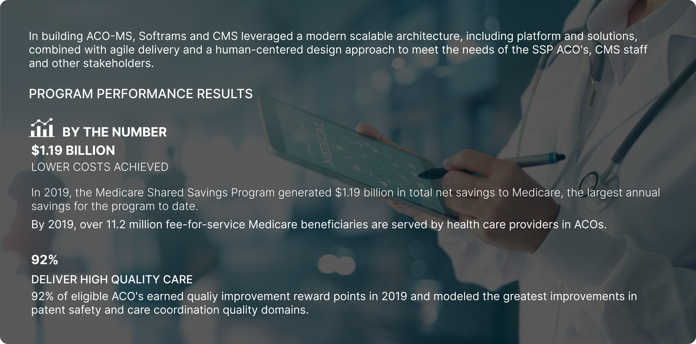

BACKGROUND The Shared Savings Program is
a voluntary program that encourages groups of doctors, hospitals, and other health care providers to come together as an ACO to give
coordinated, high quality care to their Medicare beneficiaries. The product is part of The Centers for Medicare & Medicaid Services (CMS),
which is a federal agency within the United States Department of Health and Human Services (HHS) that administers the Medicare program and
works in partnership with state governments to administer Medicaid, the Children's Health Insurance Program (CHIP), and health insurance portability
standards.

THE PROBLEM The Scope of the Shared Shaving Program grew
significantly and needed a system that could support annual changes to program requirement for nearly 513 ACO organizations.
This growth strained the existing system to the degree that a new, improved system was needed to meet the growing CMS (Center of Medicare and Medicaid services) needs.
MY ROLE I was the only UX designer to lead the redesigns
and new modules in the system. I worked alongside a UX researcher to understand the user pain points with a focus on search, browse and to manage visual
complexity.
MY APPROACH

FEATURE [01]

Landing Page & NOIA Redesign
Process The Landing page and NOIA application are two different modules which are interlinked to each other. However, the users found the process very tedious, time consuming and complex.
The goal was to make the process simple for the user to navigate and get through the whole process in one go.
We interviewed the stakeholders such as the program manager and the CMS users to understand their frustration and the user needs. With the feedback and data, we came up with the userflow to reduce the complexity of the process.
Old User Flow

New User Flow

Wireframes & Hifidelity Prototypes
For the design process, I started with a series of low-fidelity wireframes and started discussing the flows with the product manager and lead business analyst. They were really excited about the direction the wireframes and flow was going, so we scheduled standups every day and brainstormed on the whiteboard for 1 hour. From these meetings, I was able to achieve a medium-fidelity flow which was technically feasible within the development efforts and story points allocated for the team. So we were able to run usability tests with the users to get feedback. I ran 508 tests for the prototypes since it was one of the main goals.
Embedded Prototype:
Research: Usability Test Plan Dashboard

Usability Testing
We prepared and sent out user-surveys and questionnaires prior to the usability test. We were able to do a mixture of guerrilla tests with the users. We made several incremental changes maintaining visual clarity and user friendly flows over the course of 2 weeks of rapid iterative and evaluation testing.
 After the research phase, I started creating the new design system for ACO-MS system.
Usability Test Highlights
We interviewed 12 people, out of which few were doctors and others where users working in organizations.
Below are few of the issues which the users faced, also, some of their recommendations and highlights:
After the research phase, I started creating the new design system for ACO-MS system.
Usability Test Highlights
We interviewed 12 people, out of which few were doctors and others where users working in organizations.
Below are few of the issues which the users faced, also, some of their recommendations and highlights:


FEATURE [02]
Dashboard Redesign
Old Design

New Design

FEATURE [03]

User Details
REFLECTION In building ACO-MS,
Softrams and CMS leveraged a modern scalable architecture, including platform and solutions, combined with agile
delivery and a human-centered design approach to meet the needs of the SSP ACO's, CMS staff and other stakeholders.
PROGRAM PERFORMANCE RESULTS
